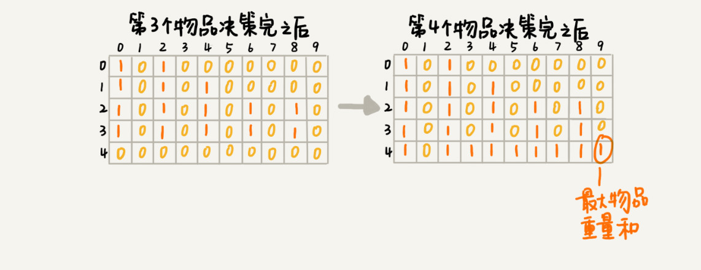

初识动态规划
初识动态规划
动态规划比较适合用来求解最优问题，比如求最大值、最小值等等。它可以非常显著地降低时间复杂度，提高代码的执行效率。
下面介绍来两个实例
实例
0-1 背包问题
背包最大承重为9，每个物品的重量分别是 2，2，4，6，3
回溯算法的递归树表示

从递归树中，你应该能会发现，有些子问题的求解是重复的，比如图中 f(2, 2) 和 f(3,4) 都被重复计算了两次。当然，我们可以借助 备忘录 来记录状态。
但是，我们还可以用动态规划来处理这个问题。
我们把整个求解过程分为 n 个阶段，每个阶段会决策一个物品是否放到背包中。每个物品决策（放入或者不放入背包）完之后，背包中的物品的重量会有多种情况，也就是说，会达到多种不同的状态，对应到递归树中，就是有很多不同的节点。


由此推出动态规划解决问题的思路：
我们把问题分解为多个阶段，每个阶段对应一个决策。我们记录每一个阶段可达的状态集合（去掉重复的），然后通过当前阶段的状态集合，来推导下一个阶段的状态集合，动态地往前推进。
0-1 背包问题升级版
在原来的基础上加入物品价值的概念，分别为3，4，8，9，6
在满足背包最大重量限制的前提下，背包中可装入物品的总价值最大是多少呢？
先来看递归树

我们用一个二维数组 states[n][w+1]，来记录每层可以达到的不同状态。不过这里数组存储的值不再是 boolean 类型的了，而是当前状态对应的最大总价值。我们把每一层中 (i, cw) 重复的状态（节点）合并，只记录 cv 值最大的那个状态，然后基于这些状态来推导下一层的状态。
时间复杂度 O(n*w)
空间复杂度 O(n*w)